github.com/andrewhannebrink/Facial-Recognition
Testing recognigtion with cropped class images
I computed these eigenfaces with the command: "$ ./main --eigenfaces 10 25 25 neutral/list.txt neutral.face" to write the first ten eigenfaces to neutral.face. I ran this command with my binary file in the "faces" directory. The output was 10 eigenface tga files and an average face tga file shown below (converted to gifs).
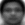 Average faceEigen faces 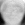 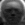 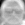 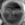 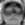 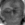 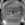 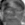
I then constructed a userbase from these images using "$ ./main --constructuserbase neutral.face neutral/list10.txt neutral.user," where list10.txt is a modified version of list.txt that only contains 10 image entries. This created the user file "neutral.user"
My program performed best when using a higher threshold for the mse with a 10 face userbase. Most face mse's fell under 1200 with some as low as 300. It is important to note that all faces I tested in the interesting directory had significantly lower mse's than the mse for test.tga (the picture of the house), which is well over 3000.
Here are the photos I tested with a mse threshold of 500: Is a face, mse: 385.814Is a face, mse: 289.163
Is not a face, mse: 683.683
Is not a face, mse: 913.998
Is a face, mse: 382.199
Is a face, mse:454.637
Is not a face, mse: 519.553
Is a face, mse: 322.44
Is not a face, mse: 565.273
Is not a face, mse: 1610.11
As I use more and more faces to comprise the userbase, my code recognizes more and more faces as faces. Below is my plot showing how many faces from interesting were recognized given the userbase size. Judging from the data, it appears that accuracy increases but suffers from the law of diminishing returns, characteristic of logarithmic curve. Since creating a large userbase is time and resource consuming, I would suggest not using too many eigenfaces when creating a database. That being said, it appears that too many eigenfaces never decreases the program's facial recognition performance.
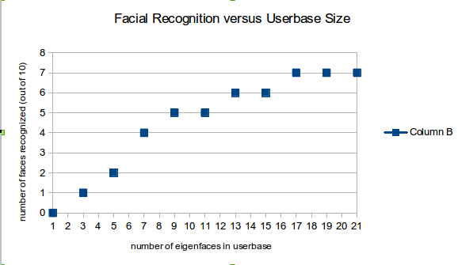Three faces were never recognized at any size userbase. These were 22.tga, 21.tga, and 15.tga, shown below in gif format. These seem like reasonable mistakes seeing as two of the three are wearing glasses, one has his head very tilt in dark lighting, and the other is making a crooked funny face. These characteristics were uncommon in the original faces used to compute the userbase."
Cropping and Finding Faces
*Note I use a 24 face userbase in this section
I ran this command to rop the input image group/test_single.tga: "$ ./main --findface group/test_single.tga neutral.face 0.35 0.55 0.05 crop 1 cropped_face.tga." The input and output images are below.
Full imageCropped image
I did, however, have less success with pictures of myself, while most parameters scale limits between .5 to .7 yielded my hat, I had trouble consistently finding my face with any parameters. That being said, most results did fall on my face, leading me to believe that the cropping adjustments I made in my code throw off the true facial detection slightly. My results are below
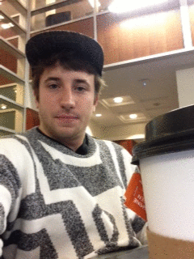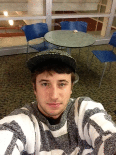 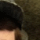
This is a good example of one of my crops with higher parameters. I used this command "$./main --findface me2.tga neutral.face 0.6 0.7 0.05 crop 1 me2_cropped_face.tga."
For my group marked photos, I had varying success, here are my results from running the following 2 commands: "$ ./main --findface group/group04.tga neutral.face 0.3 0.6 0.05 mark 4 marked_faces1.tga" and "$ ./main --findface group/group13.tga neutral.face 0.3 0.6 0.05 mark 4 marked_faces2.tga."
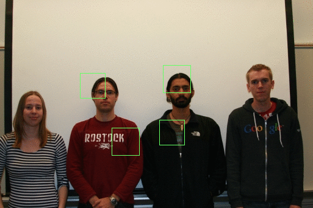 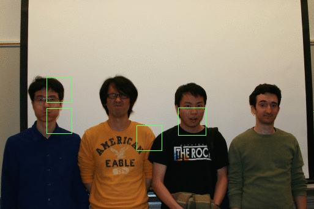The second image is a good example of how my code wants to work with the exception of my overlapping function. Since the overlapping function doesnt take into account if an overlapping crop frame has a smaller mse than the existing crop frame, it naively keeps the current best. So, we see two frames surrounding the left man's face, since the better frames overlapping the two frames were discarded when catalogging the lowest mse portions of the photo.
For my personal photo marking exercise I used a photo from the web. Again we can see behavior similar to the second image above, where multiple frames hover towards one person without overlapping. Again, this is because of my overlapping function's disfunctionality.
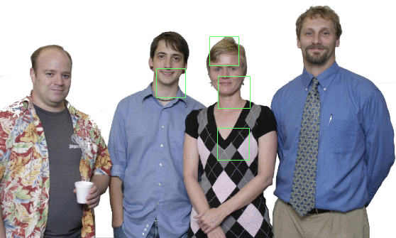Questions
You can see all of my min_scale, max_scale, and step parameters in the commands above. For pictures of just one person, particularly myself, I had to play with a wide variety of parameters. I mostly did this by guess and checking which image scale would scale the image to fit a face comfortably in the predetermined cropping box. However, for the group photos, since most of the images were arrangements of people all a certain distance away from the camera in similarly proportioned frames, I got away with using the 0.3 and 0.6 min and max scale parameters suggested on the project page.
This was by far the hardest part of the lab for me. While my overlapping handling was faulty, I also returned a fair number of false positives. These occur in places with high contrast edges, which is trait common among faces. For instance, if you blur your eyes a little bit, the box on the man's chest wearing the northface in the first picture almost resembles a face, with his necklace as an eye. This is obviously stretch. What's more concerning is the number of false negatives, where people's faces don't even come close to being in a box. It is hard for me to fully say why some of these false positives trump over the overlooked faces in the lowness of their mse's.
Verify Face
*Note I use a 24 face userbase in this section
Here are my results when verifying user's faces from the neutral group to faces in the interesting group. I tested five neutral members against a picture of themselves from the interesting group, and a picture of someone else in the interesting group. The standard command I ran was "$ ./main --verifyface interesting/02.tga neutral.user neutral/01 neutral.face 60000.0."
The first two images above are verified as the same person with an mse of 12974.3. The first and last images are verified as different people with an mse of 117704.
The first two images are a false negative with an mse of 75339.9, which is not terribly far from the threshold. This is probably because of the man's significant head rotation in the interesting group. The first and last photos are also negative, but this is correct.Unsurprisingly, they have a much greater mse of 137719.
The first two images are correctly verified as the same person, with an mse of 17413.3. The first and last two images are incorrectly identified as the same person with an mse of 53754.4. As expected, this false positive mse lingers near our threshold of 60,000. The dark lighting and similar facial features such as glasses may also account for this false positive.

Here we get that the first two images are the same person with an mse of 45571.8. Also, we get that the first and last images are not a picture of the same person with an mse of 144639. Again, the parameters supplied by the project page have done me well.
I tried a number of mse thresholds ranging from 30,000 to 120,000. I found that anything over 100,000 was too generous verifying identities, returning many false positives, and anything below 40,000 was too strict. Ultimately, I found that the course webpage's recommended threshold of 60,000 was quite ideal for this sectioni.
Given these 8 recorded trials, the false negative rate was 1/4. Judging from intuition though, I feel the rate was even lower among other sets of images I tried. Furthermore, with the mse threshold still at 60,000 for these 8 trials, the false positive rate was also 1/4.